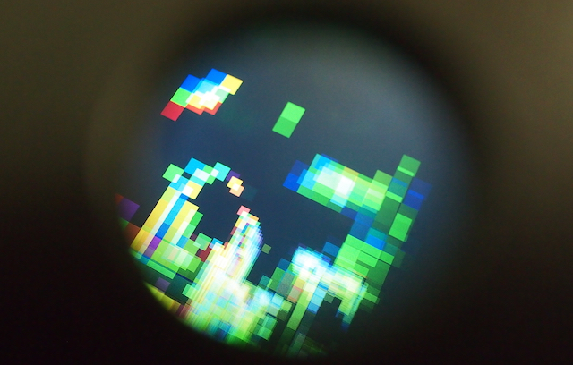
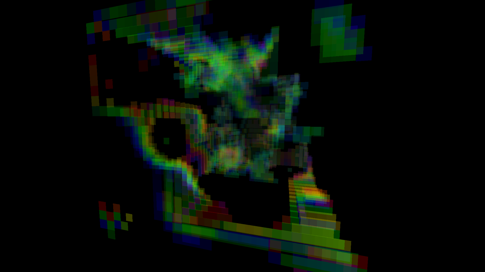

Reaction and Diffusion of two chemicals (Barkley Turbulance) make a dynamic 3D pattern in space and will be observed with a kinetoscope. Kinetoscope sets up limited view pose and dark surroundings so that more spatial feeling than merely looking at a monitor is possible. Pixelized visual style combined with kinetoscope structure tries to present the act of observation in limited viewpoint and low resolution.
 